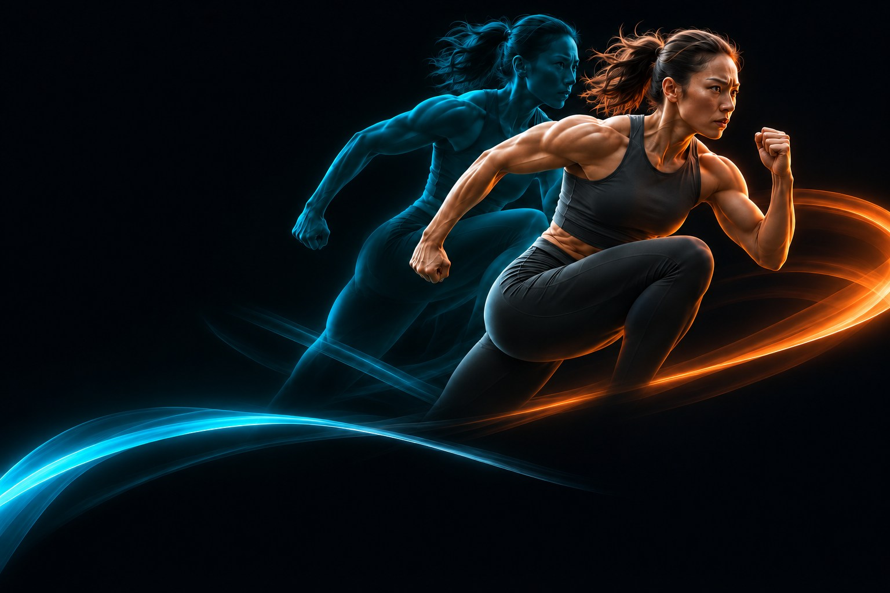
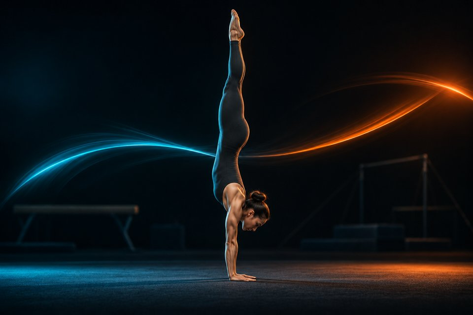
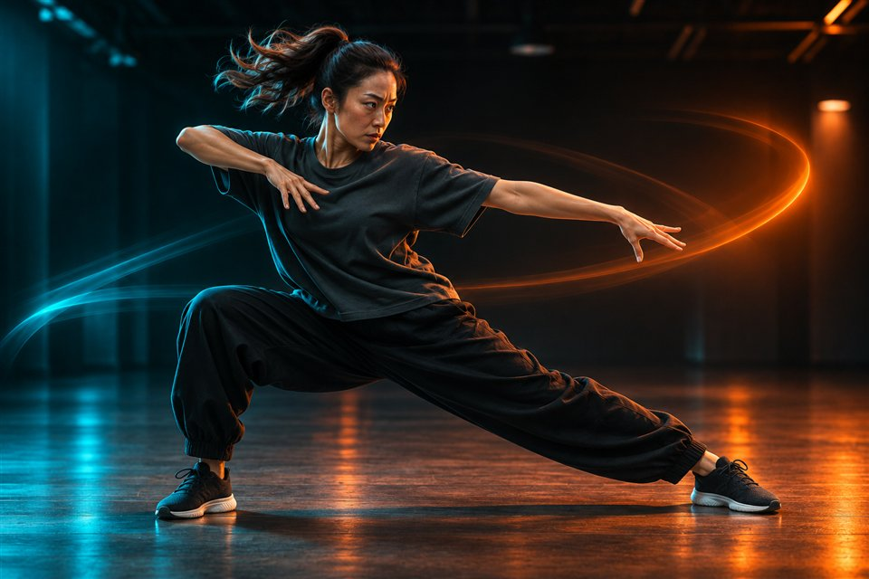
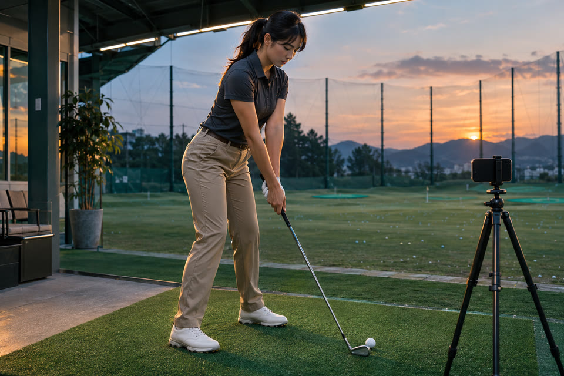
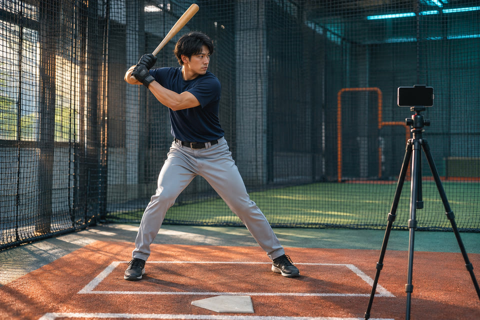
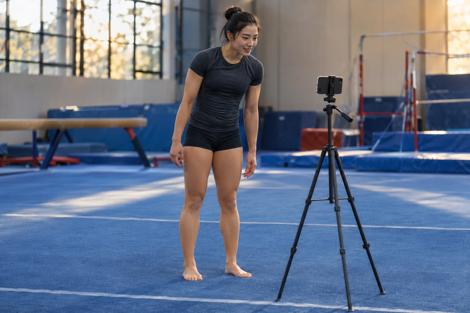
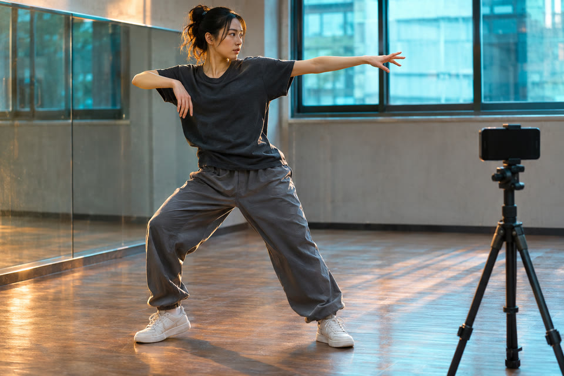
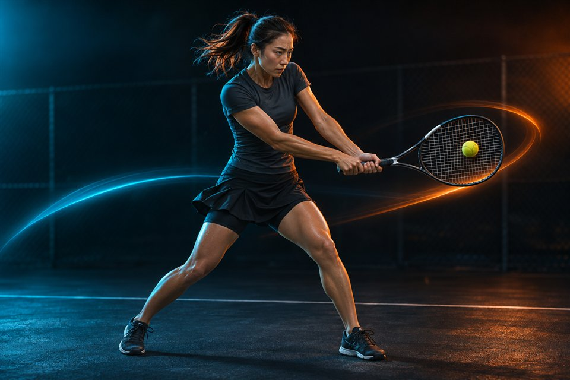

ゴルフ
頭の位置と前傾
アドレスやトップ。頭の位置や前傾を重ねて見る。

感覚を、目で確かめる。
動画を重ねて比較。
動いた直後はディレイ再生。
iOS 16.0以降 ／ 広告・アプリ内購入あり
01 / LAYER COMPARISON
お手本と自分。前回と今回。
2本の動画を重ねて、
気になる瞬間を見比べる。
WHAT TO COMPARE
同じ撮影方向・同じ局面にそろえると、違いを追いやすくなります。
ゴルフ
アドレスやトップ。頭の位置や前傾を重ねて見る。
野球
投球・打撃の踏み出しで、足と上半身の位置を見る。

体操
倒立や着地を同じコマで。前回との違いを見る。

ダンス
同じポーズをそろえ、手足の位置や向きを見る。
写真は活用イメージ（AI生成）。撮影角度が違うと、姿勢や角度の見え方も変わります。
半透明で重ねて、動きのズレを確認。
最初の比較をはじめる線・図形や書き出しの一部機能にはPROが必要です。
02 / DELAY REPLAY
さっきの感覚が、
残っているうちに。
カメラの映像を数秒遅れで再生。
動き終わって画面を見れば、直前の自分が。
録画を止めて探す手間を減らします。
画面を見るまでの時間に合わせて3〜60秒に設定。
無料版は10秒まで。動画は3秒ディレイの実演です。
MOVE. LOOK BACK. TRY AGAIN.
ひとりの自主練にも、選手とコーチが一緒に振り返る時間にも。

ゴルフ
打ってから画面へ。感覚が残るうちにフォームを確認。

野球
1スイングごとに振り返り、次の1球で試す。

体操
演技を終えてから、選手とコーチで姿勢を確認。

ダンス
踊った直後を見返し、次の反復練習に生かす。
写真は活用イメージ（AI生成）。動作の長さと、画面を見るまでの時間に合わせて遅延秒数を選んでください。
DIFFERENT SPORTS. SAME CURIOSITY.
ゴルフ、野球、体操、ダンス、テニス、サッカー。
お手本との比較にも、自分の前回と今回にも。
アドレスやインパクト。
頭の位置や前傾を、同じ局面で見比べる。
投球も、バッティングも。
踏み出しと上半身の位置を重ねて確認。
倒立のラインや、着地の瞬間。
前回と今回の姿勢を、1コマずつ振り返る。
踊った直後の動きをディレイ再生。
ポーズやタイミングをその場で振り返る。

ストロークの、気になる一瞬。
踏み込みやラケットの位置を見比べる。
キックの軸足と、上半身の位置。
お手本や前回の動きと重ねて振り返る。
比べるときは、できるだけ同じ撮影方向・同じ局面で。
撮影角度が違うと、姿勢や角度の見え方も変わります。
FIRST COMPARISON
お手本と自分、前回と今回。
自分の動画同士でも始められます。
構え、踏み出し、着地。
見比べたい場面にタイミングをそろえます。
濃さを変えたり、コマを送ったり。
まずは気になる場所をひとつだけ。
無料版には広告と利用上限があります。
BEFORE YOU START
無料でダウンロードでき、比較やディレイ再生などの主な機能を使えます。無料版には広告と利用上限があります。PROは買い切りで、広告なし・ロゴなし・1080p書き出しなどに対応します。価格と詳しい機能はアプリ内で確認できます。
動画と骨格解析の処理は端末内で行い、動画を外部のサーバーへ送信しません。広告などに関するデータの取り扱いは、プライバシーポリシーをご確認ください。
はい。自分の「前回と今回」の動画を比べたり、ディレイ再生で動いた直後を見返したりできます。
このページではiPhone版をご案内しています。対応端末やOSの最新情報は、App Storeの掲載情報をご確認ください。
サポートページからお問い合わせください。お使いの機種と、どの画面で何が起きたかをお知らせいただけると確認しやすくなります。
GHOSTFORM / ゴーストフォーム
iPhone・iOS 16.0以降 ／ 広告・アプリ内購入あり